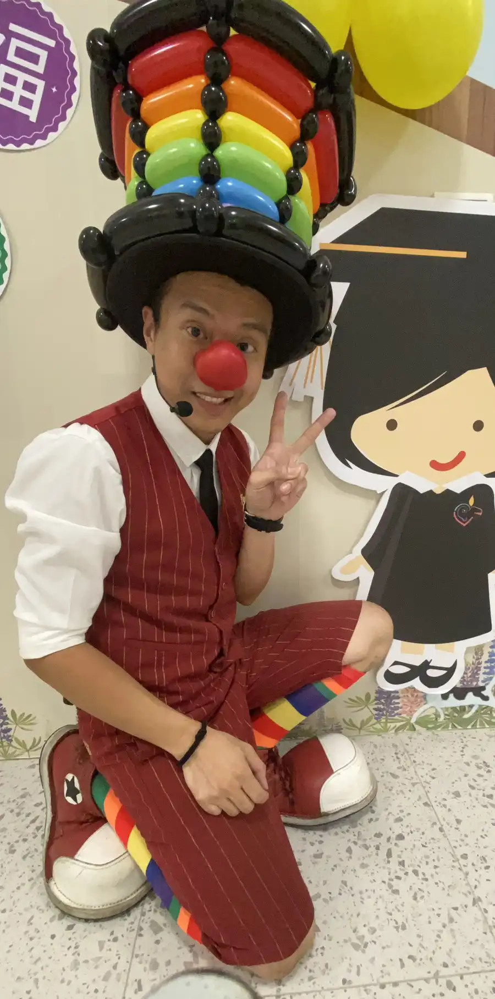

桃園中堅非營利幼兒園畢業典禮｜氣球大叔 Sony 魔幻驚喜紀實
繽紛氣球魔術 × 感恩互動環節｜為桃園畢業生打造最耀眼的快樂禮物
📍 地點：桃園市中堅非營利幼兒園
校園慶典的高光時刻：幼兒園畢業典禮的魔術奇遇
2025 年 7 月，桃園畢業季正式展開。氣球大叔 Sony 很榮幸受邀參與 桃園市中堅非營利幼兒園 的畢業典禮。 在充滿溫馨與成長喜悅的時刻，Sony 帶來了一場專為幼齡孩子設計的 **互動式魔術秀**，不僅為即將邁入小學階段的畢業生送上祝福，更讓在校的小朋友們共度了一個驚喜連連的午後。

客製化校園節目：專屬孩子的氣球魔法
為了讓畢業典禮更具記憶點，氣球大叔特別將「勇氣」與「夢想」的元素融入表演中。 從平凡的氣球轉化為可愛的動物與卡通角色，每一個魔術橋段都緊扣孩子們的想像力。Sony 更邀請勇敢的孩子上台擔任小助手，透過零距離的互動，建立孩子的自信心與舞台成就感，這正是 **桃園幼兒園表演** 中最具教育意義的一環。

- 🌈 視覺衝擊： 繽紛色彩的氣球造型，迅速帶動現場慶典氣氛。
- 🤝 深度互動： 讓孩子不再只是觀看者，而是奇蹟的一部分。
- 🎓 專屬祝福： 結合畢業主題，為每位孩子送上最具溫度的快樂回憶。
「看著孩子們笑得那麼開心，所有的辛苦都值得了！氣球大叔的表演不僅專業，更能觸動孩子的心，是今年畢業典禮最成功的亮點。」 — 桃園中堅幼兒園老師回饋
結語：全台校園首選的一站式表演夥伴
氣球大叔 Sony 擁有豐富的 **非營利幼兒園、托嬰中心、公私立國小** 演出經驗。 無論是 **畢業典禮、兒童節慶祝、校慶園遊會** 或是 **幼教宣導活動**，我們都能提供包含魔術秀、造型氣球與會場佈置的完整解決方案。 讓我們一同為您的校園慶典，創造值得珍藏一輩子的美好瞬間。
🔥 更多桃園在地與校園活動精彩案例：
- 👉 知名校園案例：龍潭康橋幼兒園｜親子餐敘氣球迎賓與魔術秀
- 👉 專業教育宣導：基隆幼兒園 SDGs 永續教育｜魔術互動與教學實錄
- 👉 桃園親子熱點：桃園小矮人親子空間｜超強人氣親子魔術互動秀
- 👉 桃園一站式派對：桃園微笑咖啡廳｜公主主題佈置 × 慶生魔術一站式服務